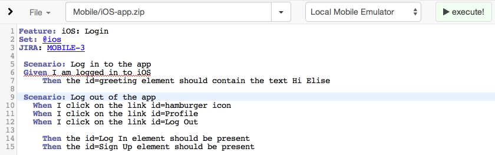

get familiar with arc! and/or the inspector
gem install appium_console, (additional docs)


gradle clean assemble
xcodebuild -sdk iphonesimulator7.1 TARGETED_DEVICE_FAMILY=1 \
-arch i386 -config Release | xcprettyappium-doctor & some deep breathing!my $android = {
app => '/path/to.apk',
appActivity => '.application.MainActivity',
appPackage => 'com.your.android.app',
platformName => 'Android',
platformVersion => '4.4'
};my $ios = {
app => 'http://remote.path/to.app',
deviceName => 'iPhone Simulator',
platformName => 'iOS',
platformVersion => '7.1'
};appiuminsulate yourself from problems
use the right tool for the job
arc! and/or the inspectorgem install appium_console, (additional docs)
official documentation: http://appium.io/slate/en/master/
Saucelabs' Appium bootcamp series via Dave Haeffner